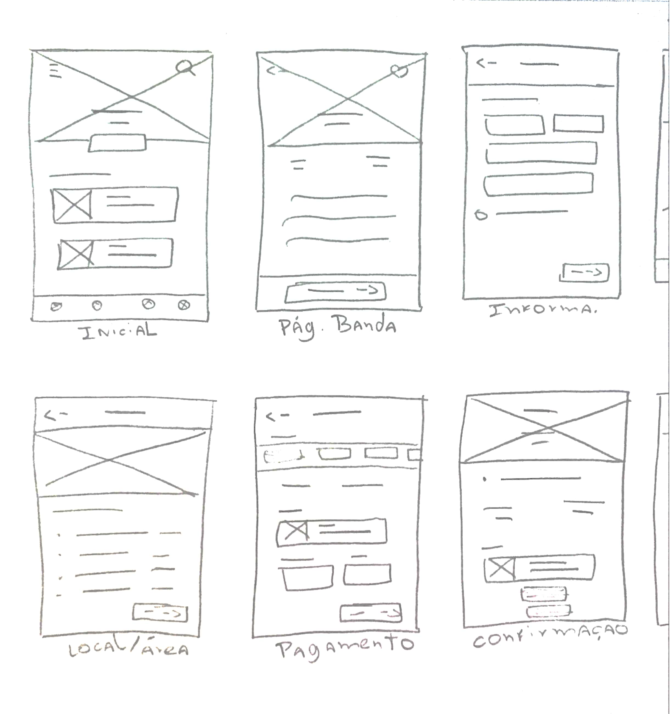
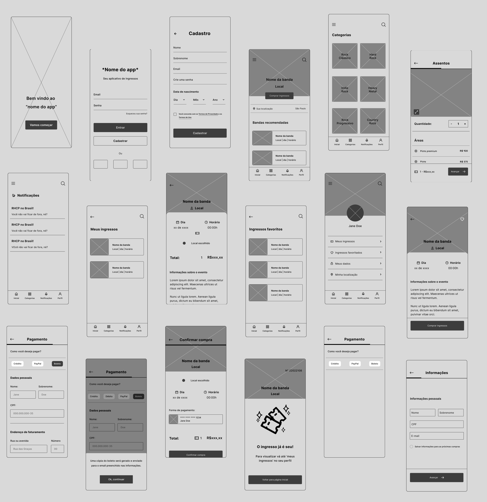

Problema
"Como podemos criar uma nova plataforma segura e prática onde amantes do rock consigam comprar ingressos
para shows e ficar sabendo sobre novos eventos dentro do mundo do rock?."
Pesquisa inicial + descobertas 🔎
“Mais agilidade na entrada do evento, comodidade aos convidados, armazenamento de banco de dados
e rapidez no repasse do valor dos ingressos são alguns dos principais motivos que fazem com que a venda de
ingressos online cresça cada vez mais.” A estratégia de venda de ingressos online vem ganhando
cada vez mais espaço no mercado, pois garante mais particidade, envolve rapidez e mais facilidade na compra.
Muitos produtores de eventos em todo o país estão adquirindo ou já adquiriram o uso de uma plataforma - própria
ou terceirizada - para hospedar seus eventos.
Entendendo o usuário
Com os dados apresentados em mente, foi conduzido pesquisas via formulários com diferentes grupos para entender
suas dificuldades e necessidades ao comprar ingressos para shows utilizando serviços online.
Alguns insights coletados:
- Foi constatado que 80% dos usuários fazem uso de sites ao invés de aplicativos para compras de
ingressos.
- Ao utilizar um serviço os entrevistados dizem prezar por facilidade, praticidade e segurança na hora da compra, algo que, segundo
eles dizem, faltam nos atuais sites de compras.
- 90% dos usuários relatam sobre bugs no processo de compra do ingresso em alguns dos sites de compras de ingressos, o que acabam não gerando uma boa experiência.
Conhecendo o usuário
Com base na pesquisa com o público, podemos definir melhor nossos usuários.
Traçando a jornada do usuário
Aqui, foi traçado todos os pontos de contato do usuário com serviços de compra de ingressos, como ele se
sente durante cada etapa e pontos de melhorias a serem feitos.
Analisando a concorrência 🔥
Nesta etapa, onde já estão definidos os usuários e que já foi traçada a jornada do usuário, é hora de realizar
uma auditoria competitiva com os atuais concorrentes de serviços de compra de ingressos que já estão no mercado.
Foi levado em consideração, facilidade de uso do site e/ou aplicativo (caso possua), acessibilidade e funções
que ajudariam a melhorar a experiência do usuário.
Arquitetura de informação
Como muitos aplicativos e sites possuem um percurso de compra padrão, aqui foi feita a arquitetura de informação
do aplicativo com todas informações dispostas em cada tela.
Objetivo
"Um aplicativo de compra de ingressos para eventos de rock, prático e acessível
que notifica os usuários de novos eventos e possui um fluxo de compra simples."
Wireframes no papel ✏
Chegando na parte criativa do processo, pude colocar a mão no lápis e papel e começar a traçar algumas ideias de
tela seguindo o fluxo principal do usuário. Ao todo foram desenhados 40 wireframes.


Protótipo de baixa-fidelidade
Aqui, foi feito o protótipo de baixa-fidelidade seguindo o fluxo principal do usuário desde a tela de cadastro
até a finalização da compra.

Visual design 🎨
O aplicativo
Etapa 1
Entrando no aplicativo
Ao entrar no aplicativo pela 1° vez, o usuário tem a opção de fazer cadastro ou login para utilizar o app,
haverá também a permissão para utilizar a localização do dispositivo, visto que o aplicativo usa o GPS
para procurar shows na área em que o usuário mora.
Etapa 2
Navegando no aplicativo
O aplicativo possui um menu de navegação (inicial, categorias, notificações, perfil) que conectam as telas
onde o usuário pode acessar as categorias de eventos, visualizar notificações e acessar o perfil para ver
ingressos favoritados, ingressos comprados ou alterar alguma configuração de conta.
Etapa 3
Comprando os ingressos 🎟
O percurso de compra passa por telas de: adicionar informações pessoais, escolher a quantidade e áreas do
ingresso, área de pagamento, resumo da compra e a tela de confirmação da compra.
Aprendizados 💡
Durante o processo de desenvolvimento desse projeto durante os 5 módulos do certificado
de UX Design do Google, aprendi sobre o processo de Design Thinking, o qual foi baseado esse projeto
realizações de pesquisas com usuários, ideação, idealização de ideias, muitos esboços feitos, dois testes
de usabilidade conduzidos, criação de um design system com padrões da interface e muitas telas feitas.
Para ver o processo completo em PDF:
Apresentaçãoarrow_outward